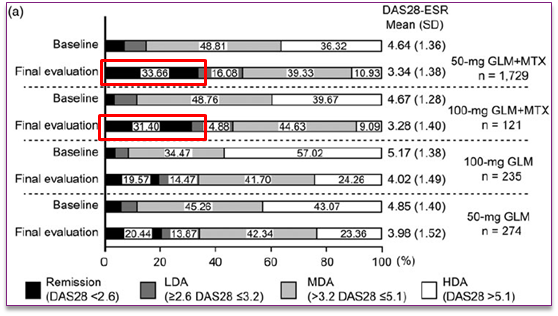
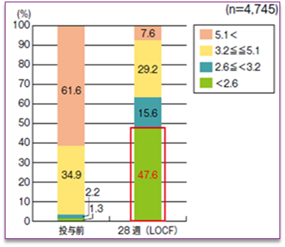

２．SIMは50㎎効果不十分な場合は、倍量の100㎎に増量できます（MTX併用の場合）
SIM+MTXの寛解率は100㎎と50㎎でほとんど変わらない
【シンポニーPMS】24週後のDAS28寛解率
SIM 50mg+MTX：33.66％
SIM100mg+MTX：31.40％

Kanbori M, et al. Mod Rheumatol 2017 Jun 6:1-10
【アクテムラ全例調査】24週後のDAS28寛解率
ACT±MTX：47.6％

Koike, T. et al.: J. Rheumatol., 41(1), 15-23, 2014
- 主に安全性を確認するPMSであり直接比較はできないものの、SIMよりもACTのほうが24週時の寛解率が高い傾向。
また、MTX併用でSIMを50㎎から100㎎に増量しても有効性の向上はあまり期待できないのでは？